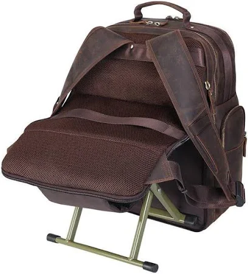
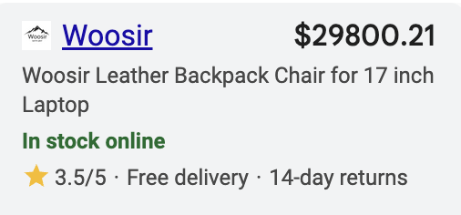
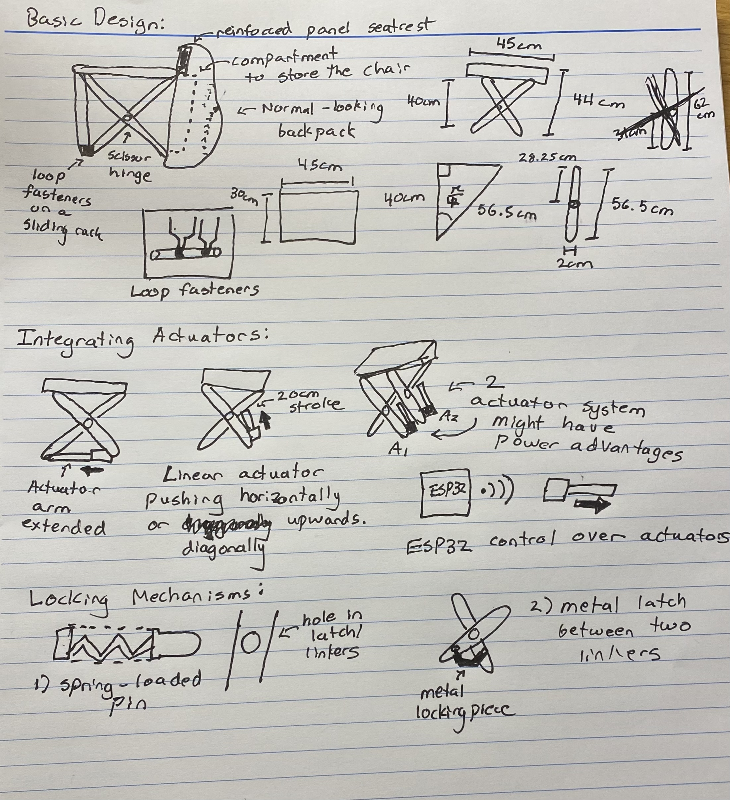
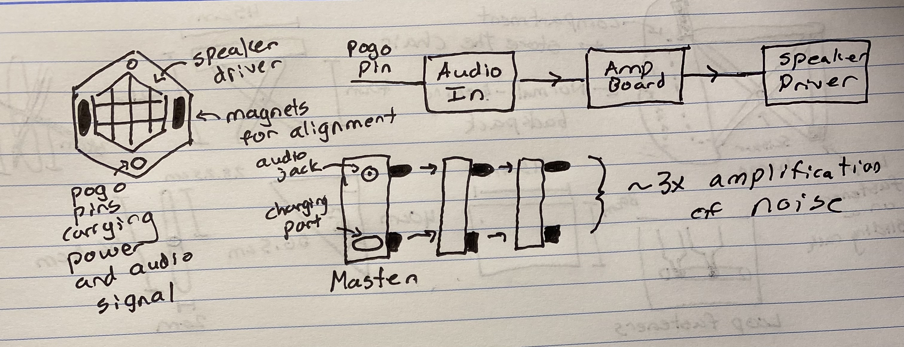

Idea 1: Backpack that Transforms into a Smart Chair
I am a lazy bum. I often find myself getting tired while waiting at a bus stop, standing outside talking to friends, or in another everday situation where I really wish I had a chair. To make matters worse, I often have my backpack weighing me down. My idea is to turn the burden of a backpack into the relief of a chair, thus enabling my lazy tendancies further. I want to create a lightweight chair design that folds into my backpack and potentially integrates some components like a portable charger, a speaker, or a water bottle holder.
Contender #1 from GCI Outdoor:

First off, I don't want to look like I am wearing a chair on my back. That is not cool. I am looking for something functional — something that wouldn't look too weird if I took it to class. Best case scenario: people don't even notice that anything is up with this backpack until I am aura-farming in front of them in my fold-out chair.
Contender #2 from Woosir:
Looks good, right...
I need something affordable so I'll start with a regular backpack and retrofit it to add the chair. My folding mechanism can be a scissor hinge with two pairs of links across a center pivot. This will allow the chair to be space efficient and able to be stored in a compartment behind the backpack. The fabric seat will be 45 cm wide, 30 cm deep, and 44 cm off the ground. If the fabric is 5cm thick then the scissor links should each be ~28.25 cm in length, with two attached together across the pivot point. The top part of the backpack will act as a seat rest with a reinforced panel to accept more load.
Linear actuators with a stroke of ~30cm could be integrated to electronically deploy the seat. One end of the actuator could be mounted on the backpack lower base plate, with the other end on the scissor center right near the pivot. Possible locking mechanisms for the links could be adding spring-loaded steel locking pin that engages when the links are fully opened. Another idea is placing a latch between the two sets of bottom links to hold them in place when fully extended.
The folding chair could be integrated with ESP32s, which would enable remote deployment. I would need to develop a method of sensing when the chair links are fully extended so the ESP32s can send the signal to stop the actuators.
Potential Issues:
- The actuators will have to provide ~3,000N of force, which requires a lot of power. ChatGPT recommended a 6S Li-ion battery (~22V)
- If the actuator has an integrated DC motor, I will need an H-bridge driver rated to ~60A, which will require robust MOSFETs and a proper heat sink. Given the high currents being drawn, I should add a circuit breaker.
Other features:
I could also consider adding a footrest, water bottle holder, charging port, and umbrella holder on my backpack.
Idea 2: Snap-together Speakers for Sound Amplification
As a college student, I listen to a lot of music but different settings can call for drastically different volumes. I am curious about the potential of using small modules that each have a driver and a tiny amplifier that could physically snap together and automatically sync their audio. Snapping four modules together will be enough for a party and after quiet hours set in (because I am a great neighbor) I could easily transition to a quieter single module.
There would have to be a core module to handle bluetooth input and supply the battery. A handful of satellite modules could be snapped together with the core module to amplify the audio signal. The cubes could have neodymium magnets for alignment and be connected by pogo pins to share audio signals.
Additional features to add on could include LED rings around each speaker module that respond when the modules snap in and also respond to the music. Another idea is to add a designated bass cube with a subwoofer for low end sounds.
Potential Issues:
- Might be tricky to secure a reliable electrical connection between modules. The pogo pins should help with this.
- Modules in the center might have muted sound because it is being blocked by the surrounding modules.
Idea 3: Mean Snack Dispenser
During freshman and sophomore year, whenever I felt like taking a cheat day, my roommate was always there to shame me about it. One time, he even slapped a HUDS brownie out of my hands… Now he’s taking a gap semester and I have nobody to stop me from testing the limits of human dessert consumption. So my plan is to replace my roommate with a robot.
I will lay out a variety of healthy (baby carrots, peas, yuck, etc.) and unhealthy (reeses, Hershey’s kisses, Haribo gummy bears) snacks in different trays. The trays will have pressure sensors beneath them so that the dispenser can tell which snack I picked up. There will be a robotic arm on the dispenser that can slap the unhealthy snacks out of my hand. If I pick up a healthy snack, the robotic arm won’t do anything. The robotic arm will need to be on a horizontal track so that it can move back and forth so it is ready to slap me if I choose unwisely. Depending on which snack I pick up, an LCD screen will display a mean or kind message.
I could also integrate a speaker/buzzer to play shameful sound effects when I pick up bad snacks. And LED strip could glow green for healthy and red for unhealthy.

Further details:
- I could make a mold of the hand and then cast it out of silicone.
- The pressure sensors can be similar to Bobby’s anti-procrastination phone box project.
- The pressure sensors can be wirelessly connected to the LCD screen and LED strips via an ESP32.